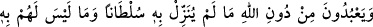

71. Onlar, Allah’ı bırakıp, Allah’ın kendisine hiçbir delil indirmediği, kendilerinin
dahi hakkında bilgi sahibi olmadıkları şeylere tapıyorlar. Zâlimlerin hiç yardımcısı
yoktur.
“Onlar,” yani şirk ehli “Allah’ı” Allah Teâlâ’ya ibadeti “bırakıp, Allah’ın kendisine”
ibâdetin câiz olduğu hakkında “hiçbir delil” yâni huccet ve burhan “indirmediği,
kendilerinin dahi” onlara ibâdetin câiz olduğu “hakkında” akıl ve istidlâl sonucu
zorunlu olarak kendilerinde hâsıl olan bir “bilgi sahibi olmadıkları şeylere tapıyorlar.”
Onlar sadece taklid ve sırf cehâletlerinden dolayı putlara tapıyorlar.
“Zâlimlerin” yâni bu büyük zulmü irtikâb eden müşriklerin, zulümleri sebebiyle
başlarına gelen azabı kendilerinden uzaklaştıracak “hiç yardımcısı yoktur.”
et-Te’vîlâtü’n-Necmiyye’de der ki: “İşâret etmektedir ki Allah havâssından olan
kimseye bir burhan tahsis eder, bir beyan ile te’yid eder ve bir sultan (güç, delil) ile
aziz kılar. Yardımsız bırakılanların ise ibâdet ettikleri türlü putlar hakkında bir delilleri,
taleb ettikleri şeye bir burhanları ve Allah’tan da kendilerine herhangi bir yardım
yoktur. Aksine onlar yardımsız bırakılırlar.”
72. Âyetlerimiz açık açık kendilerine okunduğunda, kâfirlerin suratlarında
hoşnutsuzluk sezersin. Onlar, kendilerine âyetlerimizi okuyanların neredeyse
üzerlerine saldırırlar. De ki: Size bundan (bu öfke ve huzursuzluğunuzdan) daha
kötüsünü bildireyim mi? Cehennem! Allah, onu kâfirlere (cezâ olarak) bildirdi. O,
ne kötü sondur!
Kur’an’dan “âyetlerimiz açık açık” hak olan inanç esaslarına ve ilâhî hükümlere
delâleti açık olan âyetlerimiz “kendilerine” yâni müşriklere “okunduğunda, kâfirlerin
suratlarında hoşnutsuzluk” yâni asık bir çehre ve iğrenme ile inkârı “sezersin.” Yâni
kâfirlere Kur’an’ı okuduğunda, Hakk’a karşı olan aşırı husumet ve inadlarından dolayı
yüzlerinde tiksinme ve nefret izlerini görürsün.
Bilesin ki yüzler aynalara benzer. İkrar ve inkârdan her sûret orada âşikâr olur. Bunlar
insanın iç âlemindeki hallerin eseridir. Her kap içinde olanı sızdırır. Tıpkı Sâlih
(a.s.)’ın kavminin yüzlerinin renk değiştirmesi gibi. Onun dış görünüşünde ne zâhir